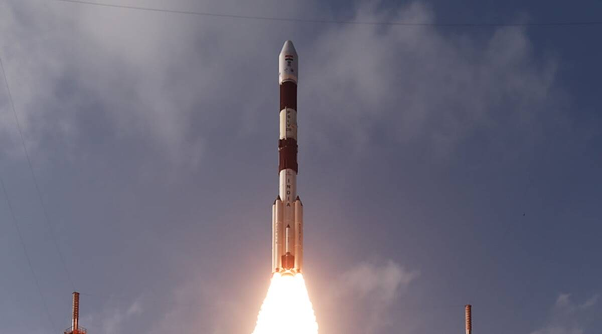

Rocket.com
ISRO Rockets

This rocket you see is called SLV-3(Satellite Launch Vehicle-3 ). Dr. Kalam as an Aeronautical Engineer, contributed for the development of India's first Satellite launch vehicle SLV-3 . The SLV-3 success was behind strap-on boosters, digital autopilot, closed-loop guidance and a bulbous heat shield.

This rocket is ASLV( Advanced Satellite Launch Vehicle ).Under the ASLV programmed four developmental flights were conducted. The first developmental flight took place on March 24, 1987 and the second on July 13, 1988. The third developmental flight, ASLV-D3 was successfully launched on May 20, 1992, when SROSS-C (106 kg) was put into an orbit of 255 x 430 km. ASLV-D4, launched on May 4, 1994.
PSLV
This rocket is GSLV MK-I (Geosynchronous Satellite Launch Vehicle Mark -I) This fourth generation launch vehicle in a three-stage vehicle with four liquid strap-ons. The indigenously developed cryogenic Upper Stage (CUS), which is flight proven, forms the third stage of GSLV Mk-I.
NASA Rockets
Some Nasa Rockets
MX-774
MX-774

NASA's first effort was to develop an intercontinental ballistic missile. The project was named MX-774. The project was canceled in 1947, but leftove r funds were used to build and launch three of t he planned 10 research vehicles designated RTV-A-2.